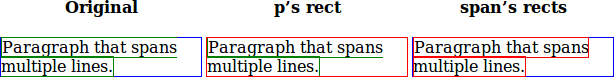
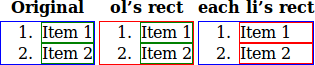
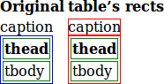

The Element.getClientRects() method returns a collection of rectangles that indicate the bounding rectangles for each box in a client.
Syntax
var rectCollection = object.getClientRects();Returns
The returned value is a collection of ClientRect objects, one for each CSS border box associated with the element. Each ClientRect object contains read-only left, top, right and bottom properties describing the border box, in pixels, with the top-left relative to the top-left of the viewport. For tables with captions, the caption is included even though it's outside the border box of the table. When called on SVG elements other than an outer-<svg> the "viewport" that the resulting rects are relative to is the viewport that the element's outer-<svg> establishes (and to be clear, the rects are also transformed by the outer-<svg>'s viewBox transform, if any).
Originally, Microsoft intended this method to return a TextRectangle object for each line of text. However, the CSSOM working draft specifies that it returns a ClientRect for each border box. For an inline element, the two definitions are the same. But for a block element, Mozilla will return only a single rectangle.
Firefox 3.5 adds width and height properties to the TextRectangle object.
The amount of scrolling that has been done of the viewport area (or any other scrollable element) is taken into account when computing the rectangles.
The returned rectangles do not include the bounds of any child elements that might happen to overflow.
For HTML AREA elements, SVG elements that do not render anything themselves, display:none elements, and generally any elements that are not directly rendered, an empty list is returned.
Rectangles are returned even for CSS boxes that have empty border-boxes. The left, top, right and bottom coordinates can still be meaningful.
Fractional pixel offsets are possible.
Example
The following examples are screenshots from the attached file.
A paragraph with a span inside. Both the span and the paragraph have a border set. The client rects are in red. Note that the p has only one border box, while the span has multiple border boxes.

A list. Note that the border box doesn't include the number, so neither do the client rects.

A table with a caption. Although the table's border box doesn't include the caption, the client rects do include the caption.

function addClientRectsOverlay(elt) {
// Absolutely position a div over each client rect so that its border width
// is the same as the rectangle's width.
// Note: the overlays will be out of place if the user resizes or zooms.
var rects = elt.getClientRects();
for (var i = 0; i != rects.length; i++) {
var rect = rects[i];
var tableRectDiv = document.createElement('div');
tableRectDiv.style.position = 'absolute';
tableRectDiv.style.border = '1px solid red';
var scrollTop = document.documentElement.scrollTop || document.body.scrollTop;
var scrollLeft = document.documentElement.scrollLeft || document.body.scrollLeft;
tableRectDiv.style.margin = tableRectDiv.style.padding = '0';
tableRectDiv.style.top = (rect.top + scrollTop) + 'px';
tableRectDiv.style.left = (rect.left + scrollLeft) + 'px';
// we want rect.width to be the border width, so content width is 2px less.
tableRectDiv.style.width = (rect.width - 2) + 'px';
tableRectDiv.style.height = (rect.height - 2) + 'px';
document.body.appendChild(tableRectDiv);
}
}
Live examples
Note that the JavaScript function that paints the client rects is connected to the markup via css class "withClientRectsOverlay".
HTML
Example 1: The HTML creates three paragraphs with a span inside, embedded in div blocks. Client rects are painted for the paragraph in the second and for the span element in the third block.
<h3>A paragraph with a span inside</h3> <p>Both the span and the paragraph have a border set. The client rects are in red. Note that the p has only one border box, while the span has multiple border boxes.</p> <div> <strong>Original</strong> <p> <span>Paragraph that spans multiple lines</span> </p> </div> <div> <strong>p's rect</strong> <p class="withClientRectsOverlay"> <span>Paragraph that spans multiple lines</span> </p> </div> <div> <strong>span's rect</strong> <p> <span class="withClientRectsOverlay">Paragraph that spans multiple lines</span> </p> </div>
Example 2: The HTML creates three ordered lists. Client rects are painted for the ol in the second and for each li element in the third block.
<h3>A list</h3> <p>Note that the border box doesn't include the number, so neither do the client rects.</p> <div> <strong>Original</strong> <ol> <li>Item 1</li> <li>Item 2</li> </ol> </diV> <div> <strong>ol's rect</strong> <ol class="withClientRectsOverlay"> <li>Item 1</li> <li>Item 2</li> </ol> </div> <div> <strong>each li's rect</strong> <ol> <li class="withClientRectsOverlay">Item 1</li> <li class="withClientRectsOverlay">Item 2</li> </ol> </div>
Example 3: The HTML creates two tables with a caption. Client rects are painted for the table in the second block.
<h3>A table with a caption</h3> <p>Although the table's border box doesn't include the caption, the client rects do include the caption.</p> <div> <strong>Original</strong> <table> <caption>caption</caption> <thead> <tr><th>thead</th></tr> </thead> <tbody> <tr><td>tbody</td></tr> </tbody> </table> </div> <div> <strong>table's rect</strong> <table class="withClientRectsOverlay"> <caption>caption</caption> <thead> <tr><th>thead</th></tr> </thead> <tbody> <tr><td>tbody</td></tr> </tbody> </table> </div>
CSS
The CSS draws borders around the paragraph and the span inside each div block for the first, around the ol and li for the second and around table, th and td elements for the third example.
strong {
text-align: center;
}
div {
display: inline-block;
width: 150px;
}
div p, ol, table {
border: 1px solid blue;
}
span, li, th, td {
border: 1px solid green;
}
JavaScript
The JavaScript code draws the ClientRects for all HTML elements that have css class "withClientRectsOverlay" assigned.
function addClientRectsOverlay(elt) {
// Absolutely position a div over each client rect so that its border width
// is the same as the rectangle's width.
// Note: the overlays will be out of place if the user resizes or zooms.
var rects = elt.getClientRects();
for (var i = 0; i != rects.length; i++) {
var rect = rects[i];
var tableRectDiv = document.createElement('div');
tableRectDiv.style.position = 'absolute';
tableRectDiv.style.border = '1px solid red';
var scrollTop = document.documentElement.scrollTop || document.body.scrollTop;
var scrollLeft = document.documentElement.scrollLeft || document.body.scrollLeft;
tableRectDiv.style.margin = tableRectDiv.style.padding = '0';
tableRectDiv.style.top = (rect.top + scrollTop) + 'px';
tableRectDiv.style.left = (rect.left + scrollLeft) + 'px';
// we want rect.width to be the border width, so content width is 2px less.
tableRectDiv.style.width = (rect.width - 2) + 'px';
tableRectDiv.style.height = (rect.height - 2) + 'px';
document.body.appendChild(tableRectDiv);
}
}
(function() {
/* call function addClientRectsOverlay(elt) for all elements with assigned css class "withClientRectsOverlay" */
var elt = document.getElementsByClassName('withClientRectsOverlay');
for (var i = 0; i < elt.length; i++) {
addClientRectsOverlay(elt[i]);
}
})();
Result
Specifications
| Specification | Status | Comment |
|---|---|---|
| CSS Object Model (CSSOM) View Module The definition of 'Element.getClientRects()' in that specification. |
Working Draft | Initial definition |
Notes
getClientRects() was first introduced in the MS IE DHTML object model.